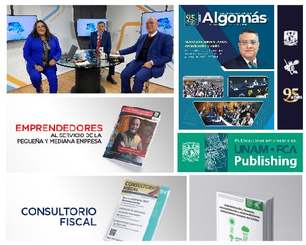

Nuestro Equipo

Juan Pérez
Director General

María Gómez
Subdirectora de Proyectos

Carlos López
Jefe de Operaciones
Conoce más sobre nuestra misión, visión y el equipo detrás de la secretaría.

Algo más es el órgano informativo de la Facultad de Contaduría y Administración de la UNAM y tiene por objeto informar a la comunidad universitaria sobre los acontecimientos académicos que se celebran en las diversas áreas de la Facultad, como: División de Estudios Profesionales, División de Estudios de Posgrado, y División de Educación Continua. En Algo más también se publican los diversos talleres culturales, la programación de convocatorias, conferencias, avisos, cursos, talleres, eventos deportivos y demás información de interés para la comunidad.
Esta publicación toma su nombre de la frase que expresó el Dr. Ignacio Chávez en el benemérito discurso que pronunció en la ceremonia anual de entrega de reconocimientos que se llevó a cabo en esta Facultad, en junio de 1965, en el que anunció de manera emocionada, la transformación de la Escuela en Facultad: “Hay algo más en ti”, siendo la invitación para buscar en el fondo de uno mismo aquello que trae escondido y que uno no sabe que constituye su reserva.
Periodicidad bimestral. Aparece los primeros días del bimestre al que corresponde.
Precio por ejemplar: Gratuito
Para mayores informes sobre nuestras revistas escríbanos a: publicaciones@correo.fca.unam.mx
Creemos en la importancia de la claridad en nuestras acciones y decisiones, asegurando la confianza de los ciudadanos.
Nos esforzamos por encontrar soluciones creativas que permitan mejorar la calidad de vida y la eficiencia en los servicios públicos.
Nos tomamos en serio nuestro compromiso con la sociedad, trabajando de manera ética y responsable en todas nuestras funciones.
Director General
Subdirectora de Proyectos
Jefe de Operaciones